| [ Team LiB ] |
|
4.5 Parameter EstimationOften when discrete linear models are developed, they are based on experimental system responses rather than on converting a continuous model to a discrete model. The estimation of parameters for discrete dynamic models is no different from linear regression (least squares) analysis. The measured inputs and outputs are the independent variables, and the dependent variables are the outputs. For simplicity, consider the following model where two previous values of the input and output are used to predict the next value. This model has four parameters 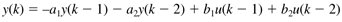 For the system of N data points we can write the following 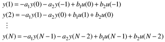 Notice that k = 1 is an arbitrary starting point for calculating the output, and that two previous data points for the output and the input are needed to start the algorithm. To make it clear that we are performing a model-based prediction of yk, we will use the notation 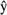k to indicate a model prediction 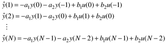 or, using matrix-vector notation 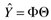 where 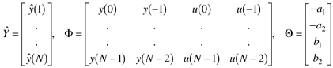 The objective is to choose a set of parameters (a1, a2, b1, b2) to minimize the square of the residuals (the differences between the model outputs and measured outputs). 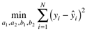 The sum of the squares of the residuals can be written in matrix notation as 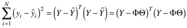 where Y is the vector of measured outputs, Y = [y(1) . . . y(N)]T. The solution to this optimization problem is (Ljung, 1996) 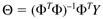 Example 4.4: Process IdentificationAlthough the response to a step input has often been used for process identification, here we apply a pseudo-random binary sequence of inputs (the input changes randomly between two values) to estimate parameters in a discrete time model. The input and output responses are shown in Figure 4-8; the open circles represent the measured outputs obtained with a sample time of 0.25 minutes. The variables are in deviation form. Figure 4-8. Output response to a pseudo-random binary input sequence. Open circles represent output data obtained with a sample time of 0.25 minutes.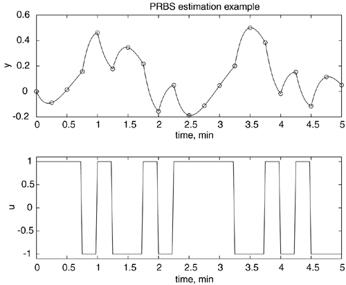 The output and input data as a function of the discrete time index are: k -1 0 1 2 3 4 5 y 0 -0.0889 0.0137 0.1564 0.4618 0.1771 0.3446 u 1.0000 1.0000 1.0000 -1.0000 1.0000 -1.0000 -1.0000 k 6 7 8 9 10 11 12 y 0.2171 -0.1558 0.0485 -0.1879 -0.1123 0.0463 0.2003 u 1.0000 -1.0000 1.0000 1.0000 1.0000 1.0000 -1.0000 k 13 14 15 16 17 18 19 y 0.5007 0.3846 -0.0172 0.1513 -0.1162 0.1134 0.0502 u -1.0000 1.0000 -1.0000 1.0000 -1.0000 -1.0000 -1.0000 The F (input-output data) matrix, Q parameter vector, and discrete transfer functions are shown below. 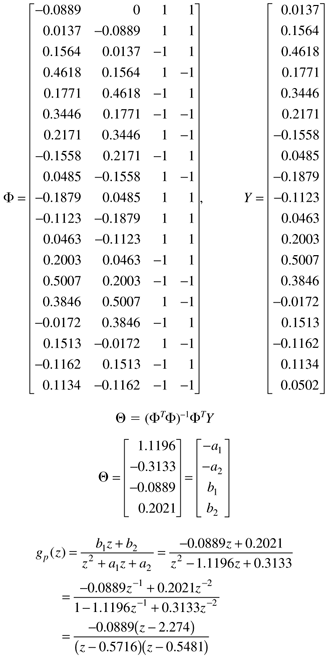 The MATLAB and SIMULINK .m and .mdl files used to generate this example are shown in the Appendix. It should be noted that the discrete transfer function can be converted to a continuous transfer function using d2c to find 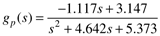 This is virtually identical to the continuous transfer function used to generate the original data. This example illustrated the response of a perfectly modeled system (no measurement noise). The approach can also be applied to a system with arbitrary inputs, and with noisy measurements. See Exercise 8 for the same process, with output data corrupted by measurement noise. To verify model parameter estimates it is common to use a portion of experimental data to estimate parameters, then another portion of the data in "simulation" mode to see how well the model predicted outputs match the data. The data was analyzed in a batchwise fashion, that is, all of the data were collected before the parameter estimation was performed. For on-line (real-time) estimation and control, we would prefer to re-estimate parameters each time we obtain a new data point. This can be done by using a "moving horizon" of past data points (each time a new data point is collected, the oldest one is thrown out), or by using recursive identification techniques. Recursive techniques are commonly applied in adaptive control, where the model is updated at each time step and a control calculation is performed based on the updated model. |
| [ Team LiB ] |
|